A tracker that tells you the truth about your week
Dayshift records how much discretionary time you actually spend on the things you said mattered, and scores it against targets that change with the day of the week. It runs entirely on your own machine.
It is deliberately not a to-do list. Nothing here is checked off. There are no points, badges, levels or streak-freeze tokens — anything that feels good to inflate works against the only thing this app is for, which is an honest record.
The six things it tracks, in two domains
| Category | Daily target | Counts on |
|---|---|---|
| SDE Project | 180 min | Mon Tue Wed · Fri Sat Sun |
| AI Automation | 60 min | Mon Tue Wed · Fri Sat Sun |
| Project Maintenance | 20 min | Sat Sun |
| DSA | 120 min or 2 questions | Every day |
| Exercise | 30 min | Every day |
| Coursework | 60 min | Every day |
Notice that Thursday is missing from the first two, and that Project Maintenance only exists at weekends. That is the point: a day the category isn't scheduled on can never count against you. Zero minutes of Project Maintenance on a Tuesday is not a miss — it's a Tuesday.
The first three are the Projects domain; the last three are
Daily, and run every day including Thursday. The dashboard
shows one domain at a time — press › to slide to the other.
DSA finishes at 120 minutes or 2 questions, whichever you reach
first; a part-done day gets the further of the two, never both added:
1 question plus 30 minutes is 50%.
Every category has a par score: the minutes you logged divided by the minutes you were supposed to log, over a rolling window. 100% means you did exactly what you said. Everything in the app is either feeding that number or explaining it.
Colour, used consistently
Each category keeps one hue everywhere — the dot beside its name, its gauge track, its heatmap. Performance uses a separate set (green / amber / orange) that is never used for a category. So colour always answers one of two questions, never both at once:
Category hue
Which one is this? Teal, violet, pink for Projects; blue, olive, magenta for Daily.
Status hue
How well is it going? Green, amber, orange.
Your first run
One command starts everything. There is nothing to configure before you begin — the app asks you to choose credentials the first time you open it.
-
Run
./start.shfrom the project folder. It creates the Python environment, installs both sets of dependencies on first run, starts the backend, then the frontend. -
Open
http://localhost:5173— the script prints it once both servers are up. -
Choose a username and passcode. The username is 3–32 characters; the passcode is at least 8. You'll only see this screen once.
-
You're in. Setup signs you straight through to the dashboard. Sessions last 14 days, so you won't be asked again for a while.
Where your credentials live
In a file called auth.json next to the app — not in the database,
and not in .env. Your passcode is stored as an argon2 hash; the
file is readable only by you.
It's kept out of the database on purpose. The app snapshots the database every time it starts, so a credential stored in there would be copied into ten backup files.
Nobody can recover it for you, because there is no "nobody" — it's your
machine. If you forget the passcode, delete auth.json and the
app returns to this setup screen.
Your logged data is not affected. That lives separately, in
dayshift.db.
Starting it from anywhere
Once, from the project folder, run make install-command. After that,
typing dayshift in any terminal opens Dayshift if it's running, or
starts it and opens it when it's ready. dayshift status,
dayshift stop and dayshift share (for your phone,
Chapter 12) work the same way.
On Windows
Dayshift runs from Command Prompt too — no Linux layer needed. Install Python
3.11 or newer and Node.js 20 or newer, then double-click
start.cmd in the project folder, or run it from Command Prompt. It
does everything ./start.sh does. For the dayshift
command, run this once and open a new Command Prompt:
powershell -ExecutionPolicy Bypass -File scripts\install-command.ps1
- Bringing your history from a Mac: stop Dayshift there and copy
dayshift.db(everything you've logged) andauth.json(your sign-in) into the project folder before the first start. Or start fresh and use Restore from an export file (Chapter 09). - Mac-only: the evening reminder uses Mac notifications, so it doesn't run on Windows. Everything else, phone sharing included, does.
Coming back later
After the first run you'll get a sign-in screen asking for the username and passcode instead. If you're already signed in you'll go straight to the dashboard — use Sign out in the header to get back to the sign-in screen.
Reading the dashboard
One domain at a time. The top half is a sliding window — this week's plan and today's dials for three categories — and everything else waits one click away in two tabbed blocks, so the page never shows you six things at once.
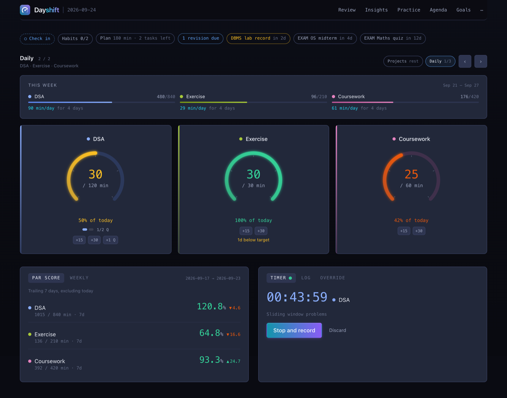
The Today line
Just under the header, one row of chips: today's check-in, your habits (tick them right there), today's plan, DSA problems due for revision, and anything on the agenda in the next two weeks. Each chip leads to where the detail lives — Chapters 10 and 11.
Domains — the sliding window
Your six categories live in two domains. Projects holds SDE Project, AI Automation and Project Maintenance; Daily holds DSA, Exercise and Coursework. Press › and the window slides to the other three. ‹, the pills, the [ ] keys and a swipe on a phone all do the same. The app remembers where you left it.
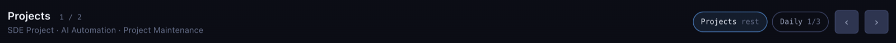
1/3 means one of three scheduled categories is done, done means all of them, rest means nothing is scheduled today. You can see whether the other domain needs you without switching.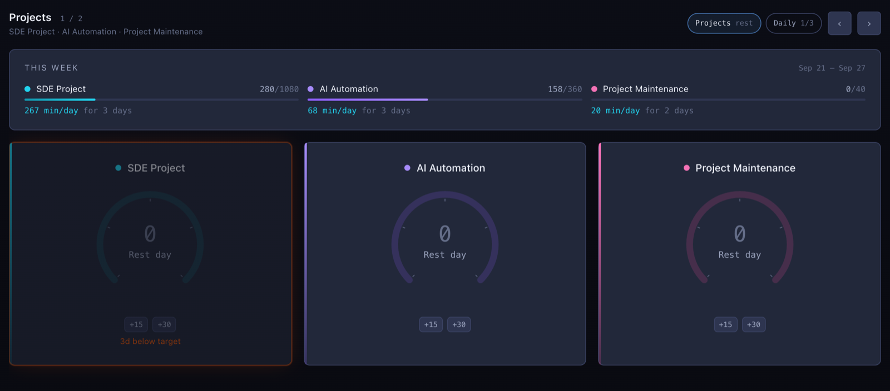
Two blocks, several windows each
Below the dials sit two blocks. The left holds Par score and Weekly; the right holds Timer, Log and Override. Only one tab per block is shown, and each block remembers the tab you last used. Both follow the domain you're on.
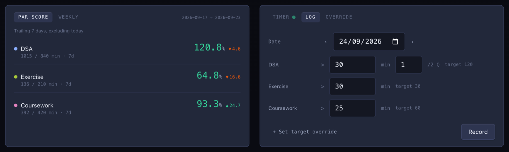
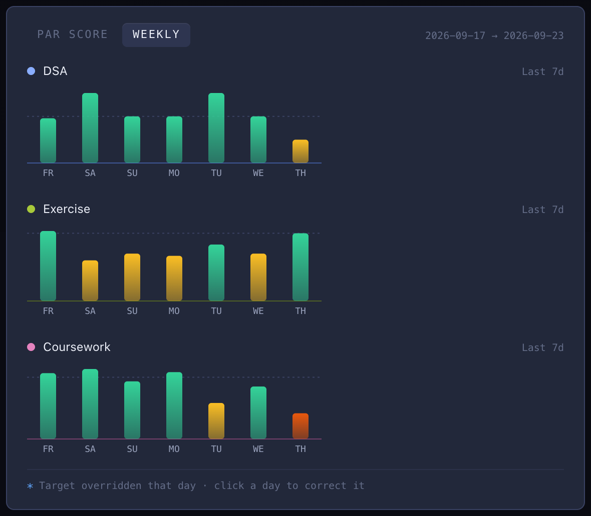
If a session is recording, the Timer tab carries a pulsing dot whichever tab is open — and the browser tab's title shows the clock (Chapter 04).
This week — the only instruction
128 min/day for 5 days. That is what's left of this week's requirement, divided across the scheduled days you have left. It rounds up, so following the number actually gets you there rather than landing a minute short.
Days you've already missed still count toward the requirement but not toward the split — so miss Monday to Wednesday and Friday's number goes up. That's the honest answer, not a punishment.
Today — the gauges
Each dial carries three separate facts at once:
- The arc and the number are coloured by today. A day at 160% shows green even during a rough week.
- The panel border carries the rolling warning state — amber, or orange with a slow pulse when it's serious.
- The track behind the arc and the dot by the name are the category's own hue.
Par score — the trailing picture
A rolling 7-day score ending yesterday, with a trend arrow against the previous window. Chapter 06 covers exactly what goes into it.
Weekly — the last seven days
One bar per day, coloured by that day's performance. A small * marks a day whose target was overridden, so an unusual day never reads as a real shortfall or surplus.
Click any day's bar to correct it on the spot — a small editor opens under the chart with that day's typed minutes (and questions, for DSA). Timed minutes are shown beside it and left alone.
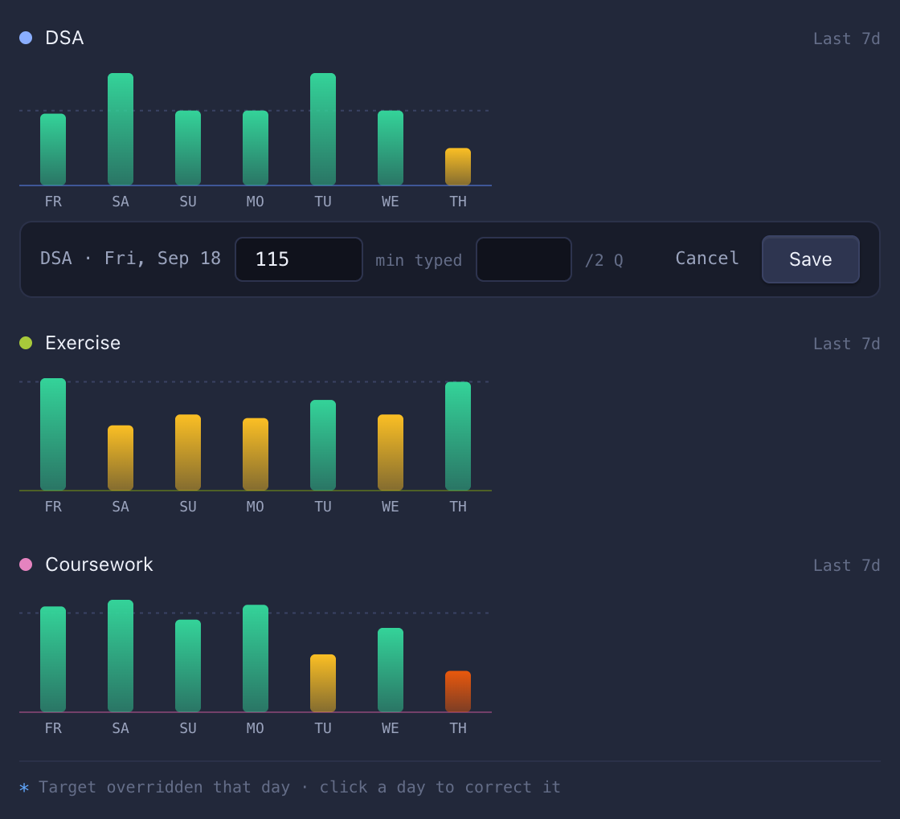
Tucked away in ⋯
The header keeps Review, Insights, Practice, Agenda and Goals. Settings,
the monthly letter, the year in review, quick entry, Today in full,
the shortcut sheet, the command palette, the background rain switch and
Sign out live in the ⋯ menu at the end.
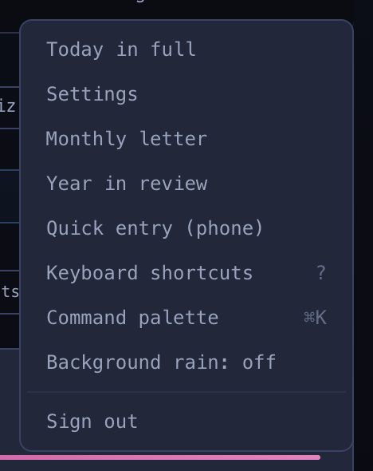
Logging your time
Two ways in, and they add together. You can measure time as it happens, type it in afterwards, or do both on the same day.
The timer
Pick a category and it starts counting. Time is measured.
Add a note before you start and it's attached to the session.
The log form
Type minutes against a date. Time is recalled.
Backdate freely — for the evening you forgot to log.
Quick add — straight from the dial
Every dial has +15 and +30. One click adds that many minutes to today's typed total — no form, no date to pick. For ten seconds afterwards the dial offers Undo, which takes back exactly what was added.
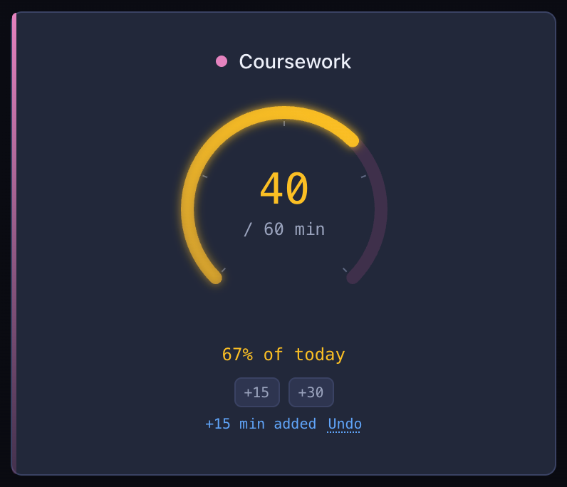
+15: 25 became 40, and Undo is on offer.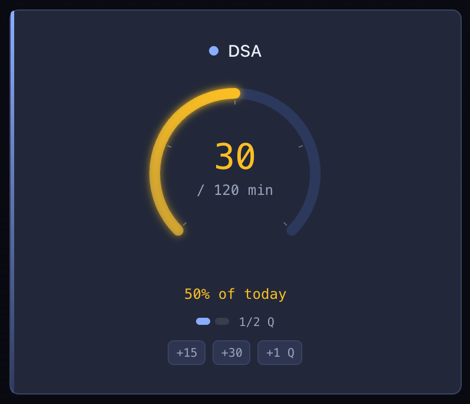
+1 Q. The pips count questions.DSA — questions or minutes
DSA is finished at 120 minutes or 2 questions, whichever you reach first. A part-done day is credited the further of the two — never both added together. Each question is worth 60 minutes of credit, so:
- 30 min, 1 question
- 50% — the question is further
- 25 min, 2 questions
- 100% — done
- 90 min, 1 question
- 75% — the minutes are further
The dial's number always shows the minutes you really worked; the arc and percentage show the credit. Lifetime totals and records count real minutes only, so a quick two-question day never inflates "time spent".
They add up — and the app shows its working
If the timer already captured 90 minutes today and you type 60 more, the day is 150. To make sure you never double-count what you already measured, the form shows what the timer holds right next to the field:
+90 timed is telling you not to type 150.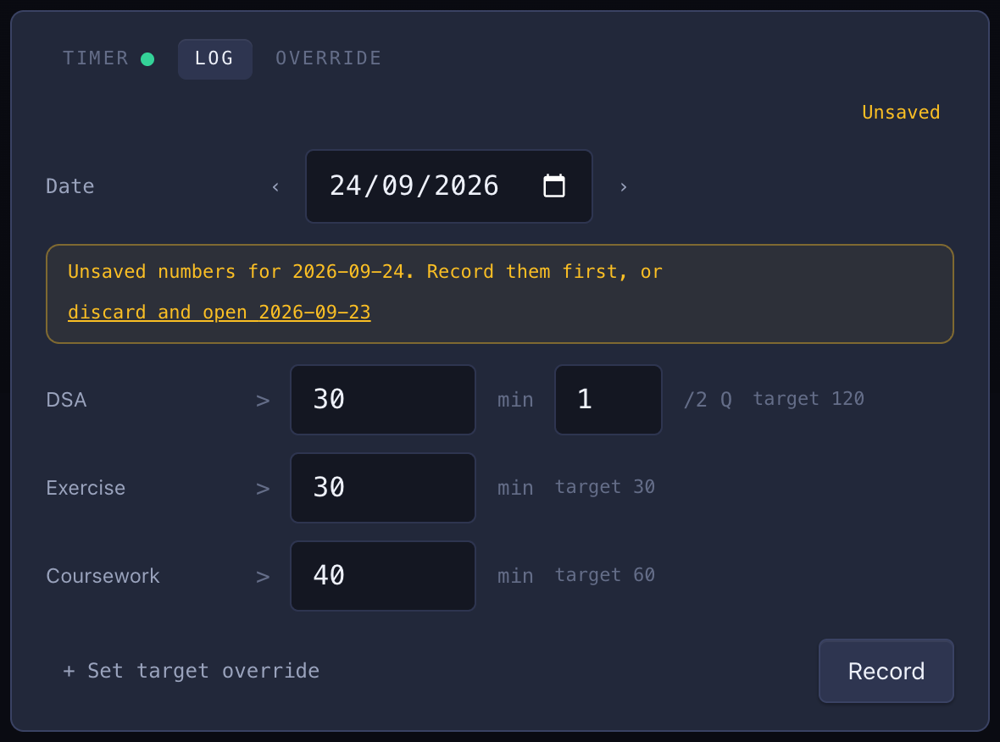
‹ › step a day, Today jumps back. Typed numbers are marked Unsaved, and changing the date won't throw them away without asking.- ⌘ / Ctrl + Enter records from any field.
- If a quick add or the timer changes the same day while you're mid-edit, the form says so and offers Reload the day rather than letting Record overwrite it.
- Left open past midnight, the form moves itself to the new today — unless you'd deliberately picked another date.
- After Record, an Undo appears for 15 seconds and puts the day back exactly as it was.
Rules the timer follows
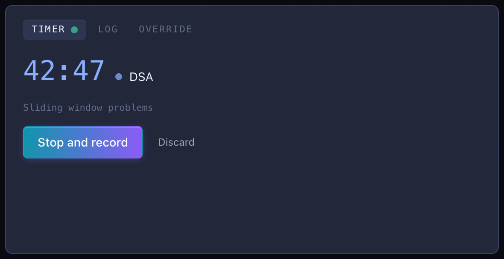
● 0:42 DSA · Dayshift, so you can see it from any other tab.- Only one timer runs at a time
- starting a second stops the first
- A running timer counts nothing yet
- minutes fix on stop
- Elapsed time survives a refresh
- derived from the start time
- Left it running overnight?
- use Discard
- Running over 3 hours
- the timer asks if you stepped away
Discard throws the session away entirely rather than recording it. Use it without guilt — recording eight hours you didn't work is far worse than recording nothing.
Focus blocks — a timer that stops itself
Above the category buttons, pick Open (runs until you stop it), 25 or 50. A 25 or 50 is a focus block: the timer counts down, chimes at the end, and records exactly the planned length — even if the laptop was asleep or the tab closed when it ran out. You can still stop early; that records the real elapsed time.
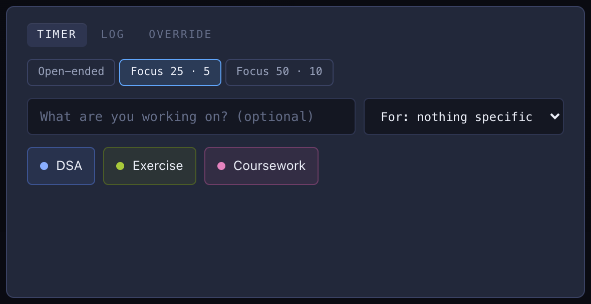
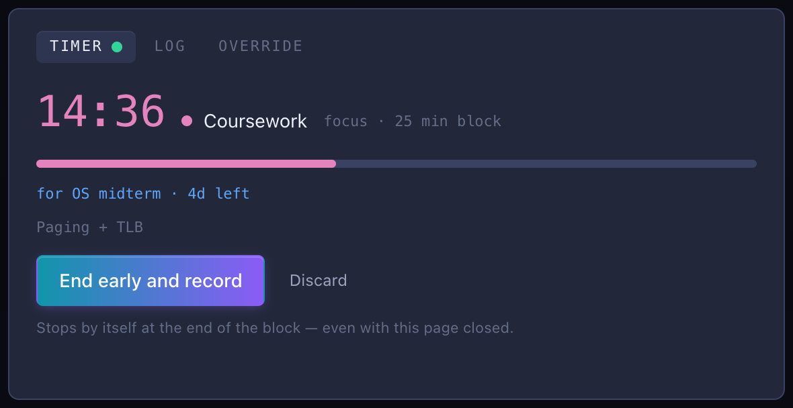
When the block ends, a short break countdown offers itself. It's optional and records nothing — it's only there so the next block starts on purpose.
The For list links a session to an upcoming exam. That's how the Agenda knows how many hours went into each one (Chapter 10).
Notes and tags
Before you start the timer, type a note and any tags. Minutes alone stop being useful after about a month; "auth refactor" against 90 minutes is what makes old data worth reading. Press Enter or a comma to add a tag; tags you've used before are suggested as you type. They're saved in lowercase, up to 12 per session.
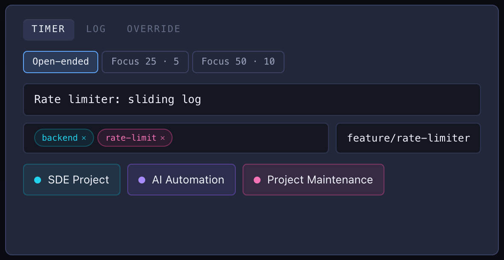
Branch or issue
For project work, the small field beside the tags takes the git branch or
issue it was for — feature/rate-limiter, #42, anything
on one line. It's plain text: nothing is looked up, so it works with any repo,
or none. It shows under the note in the day view, and Search finds it.
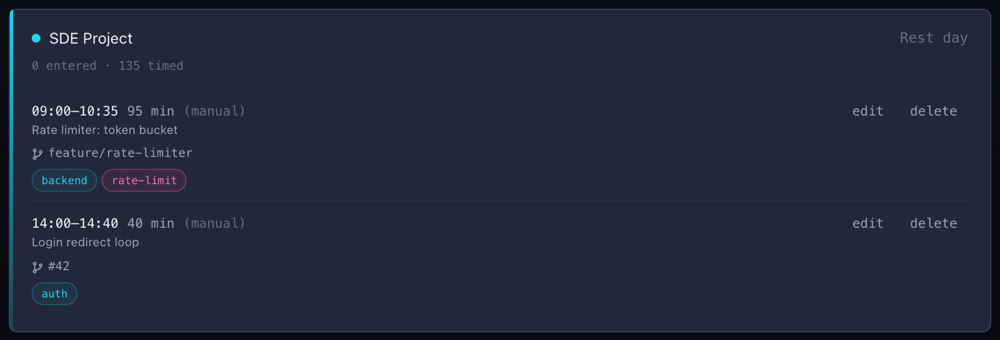
If the category has git repositories linked (Chapter 11, Git vs logged),
the day view also counts your commits that day on that branch — or, for an
issue like #42, commits whose message mentions it:
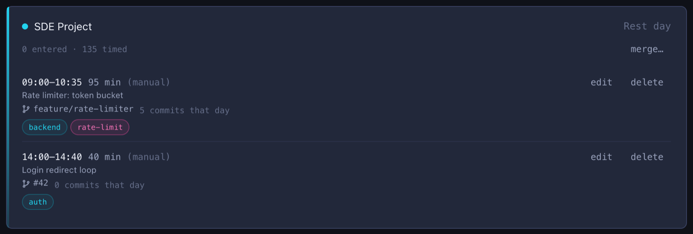
git log. A branch's count includes that day's commits it shares with the branch it came from.Fixing a session afterwards
Open Today in full from the ⋯ menu (its
← Prev link steps back through earlier days) and press
edit on a session. You can change its
category, minutes, note, tags, branch and the exam it counts toward, or
split it in two — for a block that covered two things. Both
halves keep the note, tags and exam.
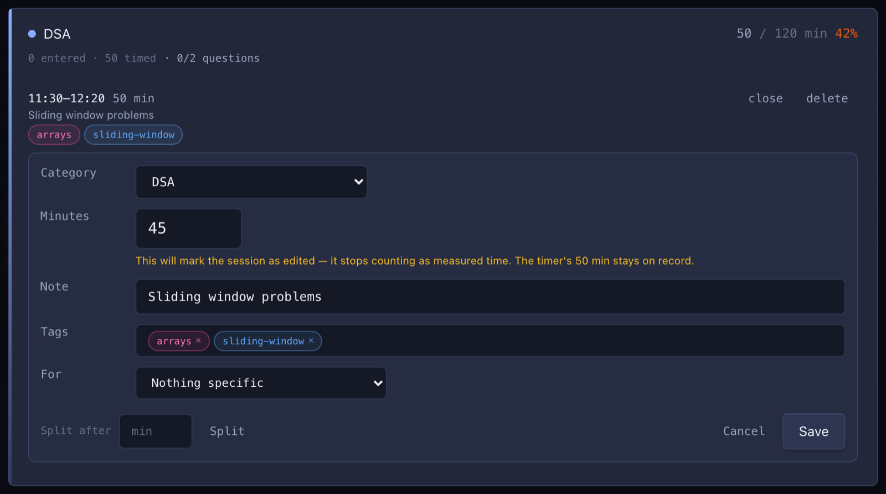
A number you changed by hand is no longer a measurement. So when you change the minutes of a session the timer recorded, it's relabelled edited, and the timer's own reading is kept beside it. The new number is what counts; the old one is never lost.
Changing the note, tags, category or exam, or splitting a session, doesn't touch that — none of them changes how long you worked.
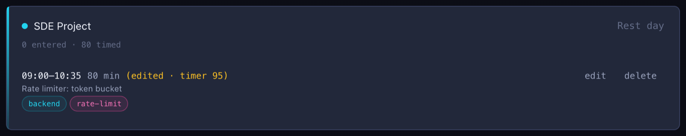
timer 95 still show what was measured.Merging sessions
The opposite of splitting: a timer you stopped for a coffee and restarted, or a block you logged in pieces. When a category has two or more sessions on a day, merge… appears beside its totals. Tick the sessions and press Merge. The minutes add up — a 50 and a 40 with a break between make 90, not the 105-minute clock span — and notes, tags and branches are combined.
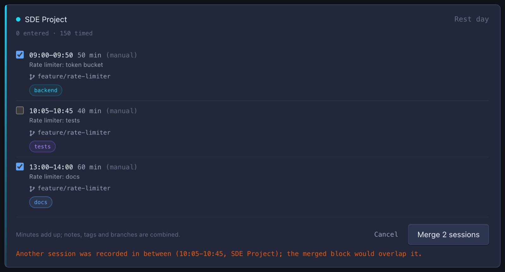
- Same category, same day
- required
- A gap between them
- fine, if nothing else was recorded in it
- Linked to different exams (or only some)
- refused — set the same exam on each first
- Running, or no time of day
- can't be ticked
- All parts timed
- the result stays measured; otherwise
(manual)
The exam rule is there so an exam's studied hours never change without you noticing: merging only ever joins time that already counts toward the same thing.
Undo — now or later
Deleting, editing, splitting or merging a session shows an Undo bar for 15 seconds. Nothing is lost when it goes: every one of those changes is kept, with the sessions as they were before, so a deleted session can still be put back later from the honesty ledger (Chapter 07).
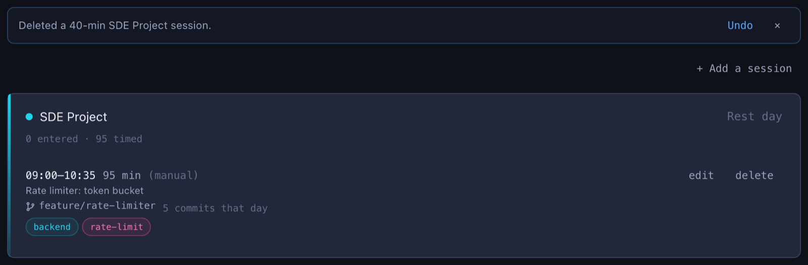
Undo refuses, and says why, when it would lose or double-count something: if a session it would replace has been changed since (undo that later change first), or if putting a session back would overlap one you've recorded since.
Adding a session you didn't time
Forgot the timer? In the day view, press + Add a session and
give the category, when it started and ended, and optionally a note, tags, a
branch and an exam. It's saved as (manual) — remembered, not measured — and
counts the same as any other session.
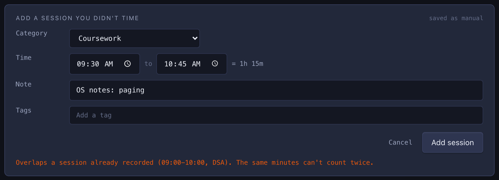
- Overlaps a recorded session
- refused — you can't do two things at once
- Ends right as another starts
- fine
- Hasn't finished yet
- refused — add it after, or use the timer
- Runs past midnight
- add one session per day
The overlap rule is the same one the timer follows: only one thing runs at a time, so no minute is counted twice. If a block really did overlap, the session already there is wrong — edit or split it first.
Minutes from the log form or quick add are stored separately from sessions,
and the day view shows them apart — 45 entered · 90 timed — so
your history always says which minutes were remembered. Timed counts
every session, edited ones included; the (edited) and
(manual) labels on each session say which ones weren't measured.
Targets & overrides
Targets are permanent expectations. Overrides are exceptions for one day. The difference matters, and the app is careful about it.
Changing a target never rewrites your history
Targets are dated. When you lower SDE Project from 180 to 120, that applies from the date you pick forward. Every day already scored keeps the target that was in force when you lived it.
Without that, the same 450 logged minutes would read as 83.3% at a 180 target and 125% at 120 — your past would silently improve every time you lowered the bar. Settings shows the full target history for each category.
Overrides: one day, one exception
An override replaces the target for a single date — a travel day, an exam, a clash. It never touches the permanent target, and the next day goes back to normal on its own.
- Override of 0
- opts the day out entirely
- Override on an unscheduled day
- opts that day in
- Days with an override
- marked * on the weekly chart
Before or after — the app can tell
A whole exam week at once
Tick Apply across a date range in the Schedule override panel, pick an end date, and optionally include other categories. Only days the category is actually scheduled on get touched, so a weekend-only category won't sprout weekday rows.
Setting a fortnight one day at a time is exactly the kind of friction that stops a tracker getting opened at all.
Presets — sick, travel, festival, half day
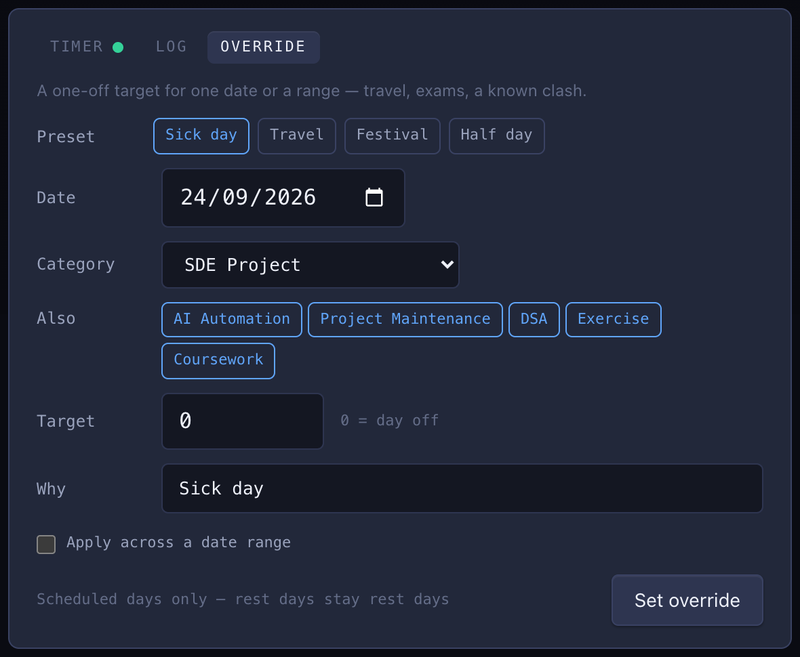
- Sick day · Travel · Festival
- every category at 0, reason filled in
- Half day
- each category at half its own target
- Rest days
- left alone — a preset never creates an obligation
Adjust anything before saving: drop a category, pick a range, change the reason. The reason shows up later in the honesty ledger and the day view.
When a target has stopped fitting
The weekly review has a Target check. If a category has been at or above 110% every week for four complete weeks, it suggests raising the target; at or below 60% for four weeks, lowering it. The suggested number is your real average per scheduled day, rounded to 5 minutes, starting next Monday.
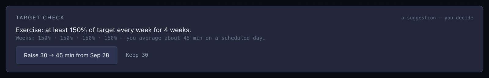
It is only ever a suggestion. Raise (or Lower) adds a dated target, so your past keeps the old one; Keep hides the suggestion. The thresholds live in Settings → Suggestions.
How scoring works
Par is one division: minutes you logged over minutes you owed. Everything interesting is in which days get counted.
Which days count
| Situation | Counted? |
|---|---|
| A scheduled day you logged | Yes |
| A scheduled day you forgot | Yes — as zero |
| A day the category isn't scheduled | No |
| A day with any override | Yes, at the override |
| Anything before your tracking start date | No |
| Today | No — see below |
Absence is a zero, not an excuse. A scheduled day with no entry counts against you at the full target. That's the whole point — otherwise forgetting to log would quietly improve your score.
Today is unfinished. Including it would make par read terribly at 9am and recover by evening, and could trip a warning on a day that isn't over. Your live progress is already on the gauges; par is the stable trailing number.
Warning states
A category's border changes colour when it's been under for a while. There are no popups, toasts or alerts anywhere in this app — the border is the warning.
| State | Trigger | Shows as |
|---|---|---|
| Healthy | Everything else | plain border |
| Warning | 2+ days under 80% | amber border |
| Critical | 3+ days, or par under 50% | orange, slow pulse |
The consecutive-day count steps over days the category isn't scheduled on. A bad Wednesday and a bad Friday count as two in a row even though Thursday sits between them — because Thursday was never a day you were meant to work. A scheduled day off can't launder a warning.
You can lower a target after a bad day and make a warning disappear. The app won't stop you — there's no one to stop you from. What it does instead is keep a visible record, which is Chapter 07.
The weekly review
Once a week, at /review. It opens on the week that just finished —
reviewing a week still running is guessing.
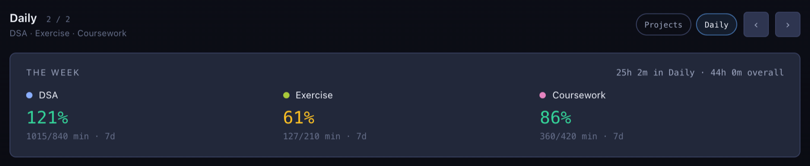
Where the week went
Under What it produced: the week's top tags and branches by time. Click a tag to see its sessions in Search.
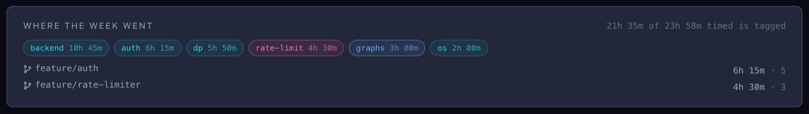
Commitments — what you said you'd do
Before or during a week, put a number against each category. At the end you see promise against reality:
- SDE Project
- short 183 · did 717
- AI Automation
- kept · did 340 (+40)
- Project Maintenance
- nothing promised
A commitment is not a target. The target is the standing expectation; the commitment is what you claimed, that week, you'd actually manage. The gap between the two is the interesting number.
Reflection — the part only you can supply
A text box, stored per week, readable forever. The numbers are computed; what got in the way isn't. "Lost Tuesday to a lab that overran; mornings worked better than evenings" is the sort of thing that changes next week.
Records
Current streak, longest streak, best day, best week, lifetime total. Facts, not points. An unfinished today never breaks a streak — and never flatters one either. Today only counts once it already meets target.
The honesty ledger
At the bottom: every target you changed after the day it governed, how many days later, and whether it lowered the bar.
This undoes nothing and blocks nothing. An override you set in advance never appears here. It exists so that lowering the bar after the fact is a thing you decided to do, rather than something that happened invisibly.
Sessions changed after the day
The same idea for recorded time: a session deleted, or its minutes changed, on a later day than its own. Deleted sessions are kept, so each one can be restored from here; an edit can be undone. Same-day fixes, splits and merges aren't listed — they don't rewrite a finished day.
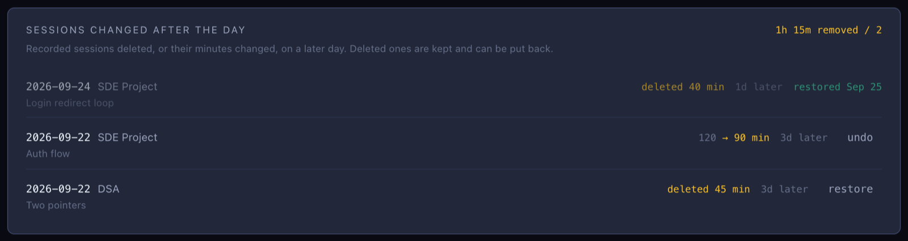
Insights over time
At /insights, over 30, 90 or 365 days. This is where you find out
whether you're actually better than you were in October.
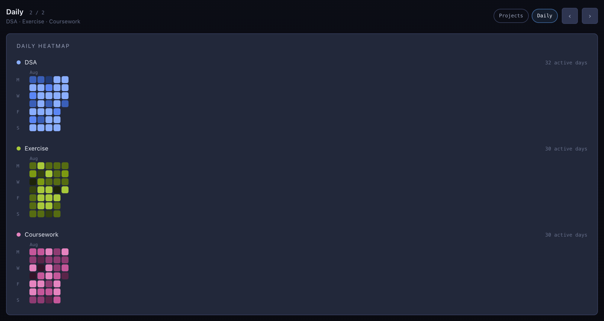
The heatmap
Consistency — the number par can't tell you
180 minutes every day and 1,260 minutes in one Sunday give you exactly the same par score. They are not the same habit, and only one of them survives a busy week.
The consistency score is 100 minus how much your days vary. High means steady; low means feast and famine. It's shown alongside your best streak, best day and spread.
Time by tag
Where the hours went, one level below the category: every tag's time over the page's period (30, 90 or 365 days), each bar split by the categories it came from. Click a tag to see every session behind it in Search.
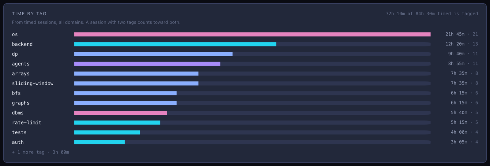
A session tagged both dp and arrays counts toward both
bars, so the bars can add up to more than the period — that's what overlapping
labels mean, and the panel says so rather than splitting the time arbitrarily.
Only sessions count; minutes typed into the log form have no tags.
Focus blocks
How your 25- and 50-minute blocks went over the period: how many ran to the end, and how long the early ones lasted. An early stop isn't a failure — if 50s keep ending at 30, the 25s might simply suit you better.
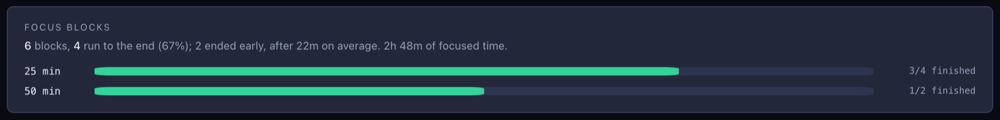
Searching your sessions
Press / anywhere (or Search sessions in the
⋯ menu). Type part of a note, a branch or a tag, and every matching session
comes back newest first, with the words you typed marked and a total at the
top. Click a tag on any result to narrow to exactly that tag; click a
date to open that day, where the session can be edited.
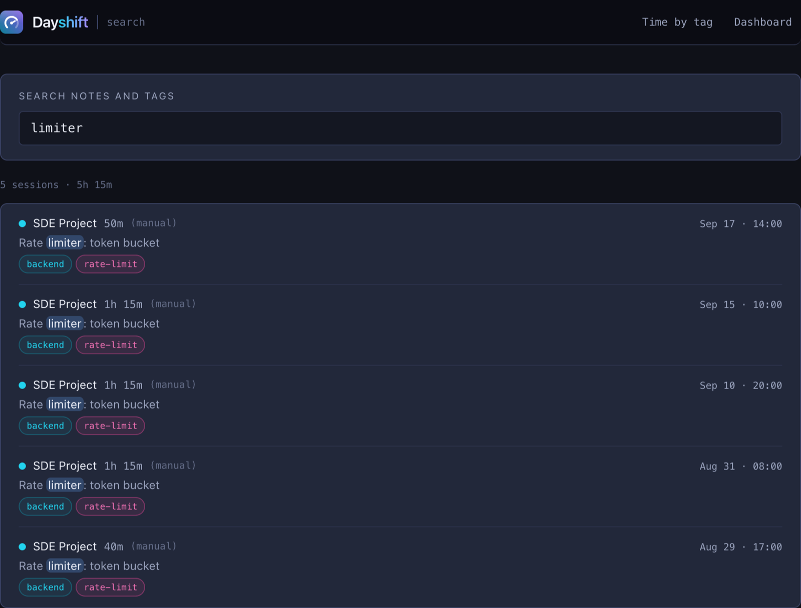
The search is in the address bar (/search?q=limiter), so a search
you run often can be bookmarked, and Back returns to the previous one.
What else is there
- Trend
- daily line + 7-day average
- By weekday
- which days you actually deliver
- Time of day
- from timed sessions only
- Period comparison
- this stretch vs the one before
The trend line breaks on days you weren't scheduled rather than dropping to zero — a rest day should never look like a collapse.
Time of day only counts sessions that carry a real clock time. A total you typed in for "yesterday" has no hour attached, and inventing one would be making up a pattern you never recorded.
Settings & your data
Everything that used to need a text editor is in /settings. Nothing
requires touching the database.
Categories
- Rename or reorder them freely.
- Add a new one with its own target and schedule.
- Archive rather than delete — archived categories vanish from the dashboard but keep every entry. Deleting would destroy history.
- Retarget from a chosen date forward, with the full history listed underneath.
- Move a category to another domain, or type a new domain name to create one.
- Give a category a question target as a second finish line, like DSA's 2. Setting it to 0 removes it from that date forward.
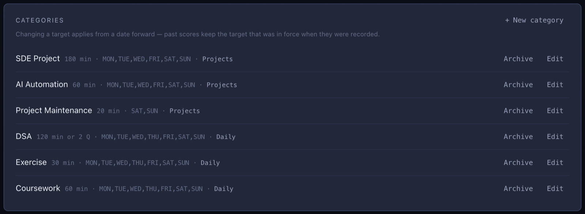
120 min or 2 Q.Backdating a target is allowed but warned about, because it genuinely does change how past days are judged.
Scoring
These change how every score is calculated, including past ones:
- Tracking start
- nothing before this counts
- Par window
- 7 days by default
- Include today in par
- off, for good reason
- Warning / critical thresholds
- 80% and 50%
- Consecutive days to trigger
- 2 and 3
- Weekly chart span
- 7 days
Settings come in three groups — Scoring, Suggestions and Backups & reminders — each with its own Save and Reset, so resetting one never touches another. If one value in a save is invalid the whole save is rejected, so your settings are never left half-applied.
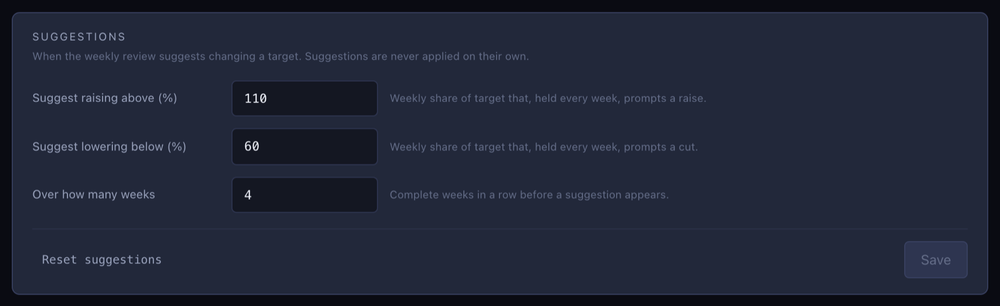
Getting your data out
CSV
One row per day and category. Typed and timed minutes stay in separate columns, so the distinction survives the export.
JSON
Everything: categories, target history, logs, sessions, tags.
The database is copied into backups/ every time the app starts
(skipped when nothing has changed), keeping the last ten. It's a small file,
and losing months of tracking to a stray command would be unrecoverable
otherwise.
A weekly export to a folder you choose
Under Backups & reminders, set Weekly export folder to a folder your cloud app already syncs — iCloud Drive or Google Drive. Once a week the backend writes the full JSON export there, keeping the last 12 (you can change that). Export now writes one immediately. Dayshift never talks to the cloud itself; it only writes a file into a folder.
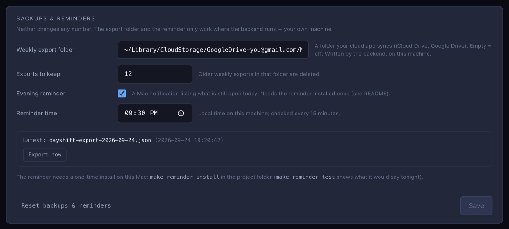
Setting it up with Google Drive
-
Install Google Drive for desktop and sign in. It puts your Drive in Finder, under Google Drive → My Drive.
-
Make a folder for the exports — in Finder or on drive.google.com, e.g. DayShift Tracker. Wait until it shows up under My Drive in Finder.
-
Copy the folder's path. In Finder, select the folder and press ⌥ ⌘ C. It looks like
/Users/you/Library/CloudStorage/GoogleDrive-you@gmail.com/My Drive/DayShift Tracker. -
Paste it into Weekly export folder in Settings → Backups & reminders, and press Save. The app checks the folder exists and can be written to before it accepts it.
-
Press Export now. A file named
dayshift-export-YYYY-MM-DD.jsonappears in the folder, and Drive uploads it. After that, one arrives every week on its own.
The setting needs a folder on this Mac, not a web address. Dayshift makes no network calls of its own — it writes a file, and Google Drive for desktop does the uploading. iCloud Drive works the same way: use a folder under iCloud Drive in Finder.
- Exports are written only while the app is running, so the Mac needs to be on with Dayshift started some time that week.
- Only the newest 12 exports are kept; older
dayshift-export-*.jsonfiles in that folder are deleted. Nothing else in the folder is touched. - Each file is a full JSON export — everything Settings → Export gives you — so any one of them is a complete copy of your history.
An evening reminder
Tick Evening reminder and pick a time. At that time, a Mac notification lists what's still open today — no check-in yet, habits not ticked, revisions due, planned tasks left, tomorrow not planned. If nothing is open, it stays quiet. It needs a one-time install from the project folder:
make reminder-install
make reminder-test prints what it would say tonight without
notifying; make reminder-uninstall removes it.
Restoring a snapshot
Settings → Data lists the snapshots. Restore… asks you to
type RESTORE, then replaces everything with that snapshot. It can
be undone: your current data is snapshotted first, so it appears in the same
list afterwards. Your username and passcode are not affected.
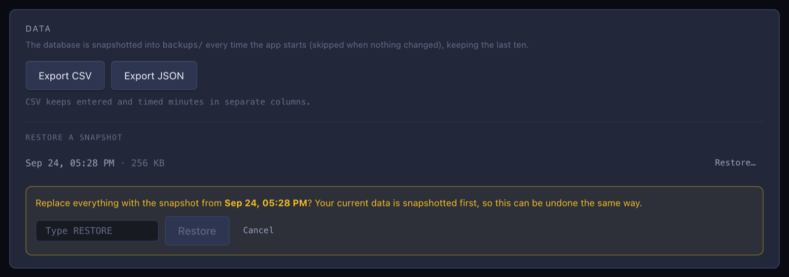
Restoring from an export file
Snapshots live on this Mac. If the Mac is gone, the weekly exports in your
Google Drive folder are the copy: on the new machine, Settings → Data →
Restore from an export file. Pick the newest
dayshift-export-….json; it's checked and summarised before
anything changes, then you type RESTORE.
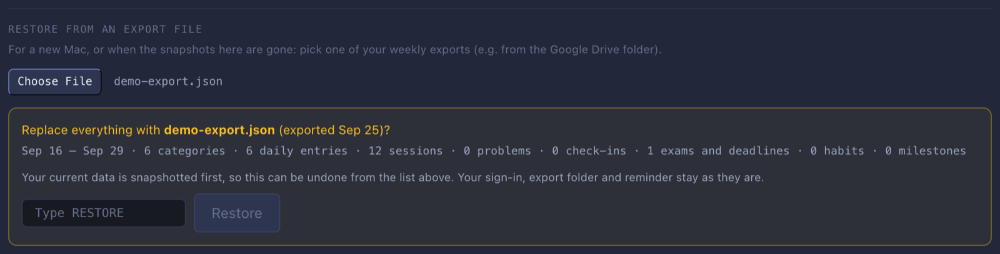
- Current data
- snapshotted first — undo from the snapshot list
- Username and passcode
- untouched (never in an export)
- Export folder and reminder
- keep this Mac's settings
- An export from before September 25
- refused — export again first
Changing your username or passcode
Settings → Credentials, confirmed with your current passcode. Changing the passcode also signs out any other session — which is the point of changing it.
Practice, check-ins & exams
Three things that minutes alone can't tell you: which DSA topics you're weak in, how sleep and energy shape your days, and what's coming up. None of them changes how your minutes are scored — with one deliberate exception, exams.
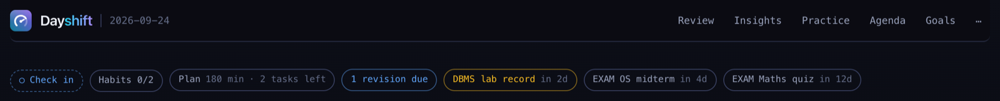
Practice — the DSA problem log
At /practice (or press q). Log each problem
you solve with its topic, difficulty and whether you needed a hint.
Logging a problem counts as one DSA question on the day you
solved it — the same count +1 Q adds to — so you never log the
same thing twice.
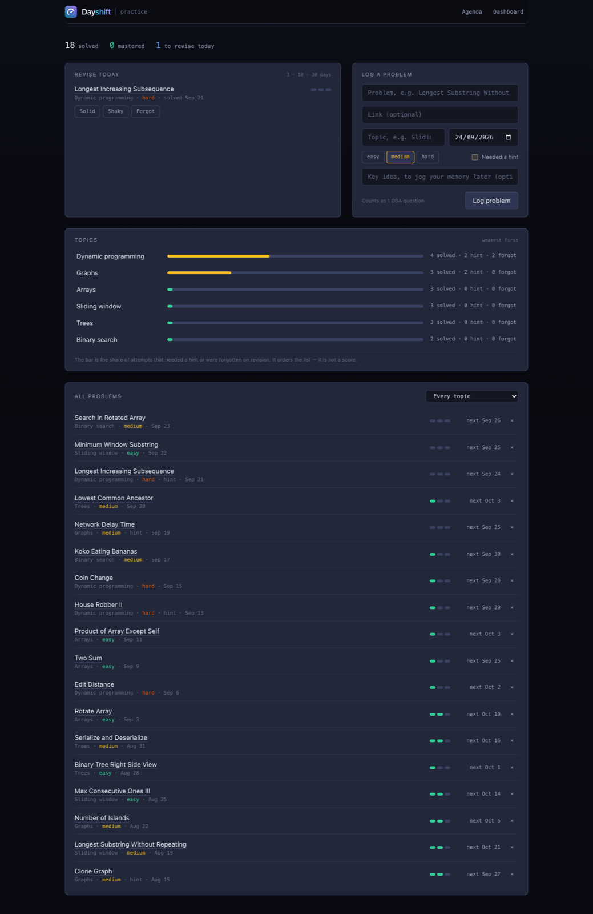
Revision: 3, 10 and 30 days
Every problem comes back 3 days after you solved it, then 10, then 30. Solve it again and say how it went:
- Solid — solved it cleanly
- next gap is longer
- Shaky — got there, with a struggle
- same gap again
- Forgot — couldn't solve it
- back to 3 days
- Three solid revisions
- mastered, stops coming back
A revision never counts as a question — the 2-question target is for new problems. The minutes you spend revising still count as DSA time. The Topics list puts the topics where you most often needed a hint or forgot on revision at the top: that's where your next problem should come from.
Fixing a problem you logged
Press edit on any problem to change its title, link, topic, difficulty, hint or notes — or the day you solved it, which moves its DSA question to that day. A revision you tapped by mistake can be removed there too; the schedule goes back as if it never happened.
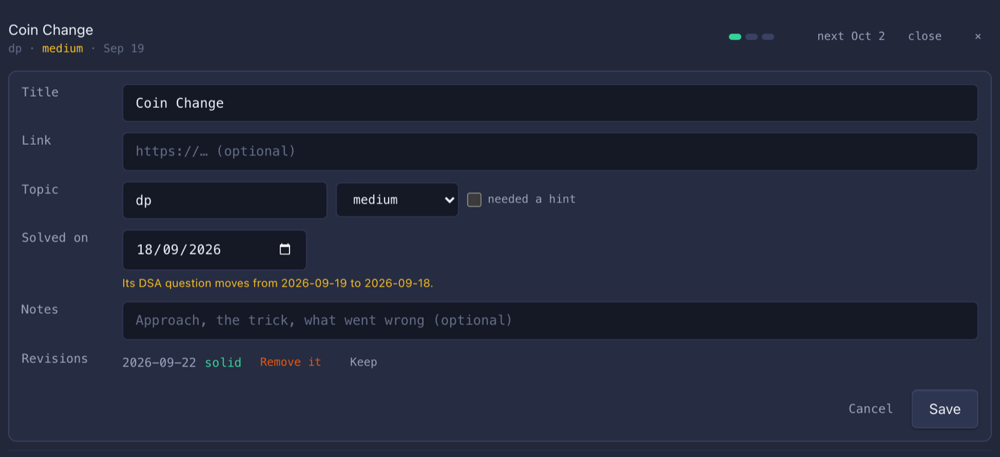
A revision session
▶ Start revision session above the Revise today list
starts a DSA timer (tagged revision) and walks the due problems one
at a time: open it, solve it, mark it Solid, Shaky or Forgot, and the next one
comes up. Stop the timer when you're done and the minutes land as DSA time.
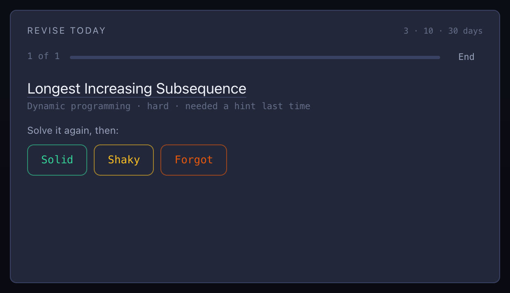
Check-ins — sleep, energy, mood
Tap Check in on the Today line. Hours slept last night, energy and mood on 1–5, and an optional note — every field optional, about ten seconds.
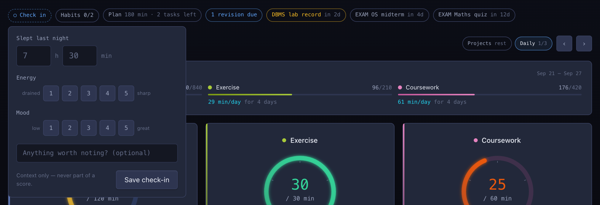
A day you don't check in stays a gap. It's never filled in, carried forward or guessed. In Insights, the Sleep & energy panel lines check-ins up against how each day went:
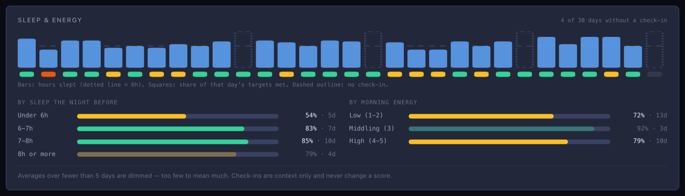
The share of that day's targets met, with each category capped at 100% — so four hours of one thing can't hide a skipped other. Averages over fewer than five days are dimmed: too few to mean much.
Agenda — exams and deadlines
At /agenda (or a). Add exams, assignments or
anything else with a date, and they appear on the Today line as they get close.
The page also holds your daily plan — Chapter 11.
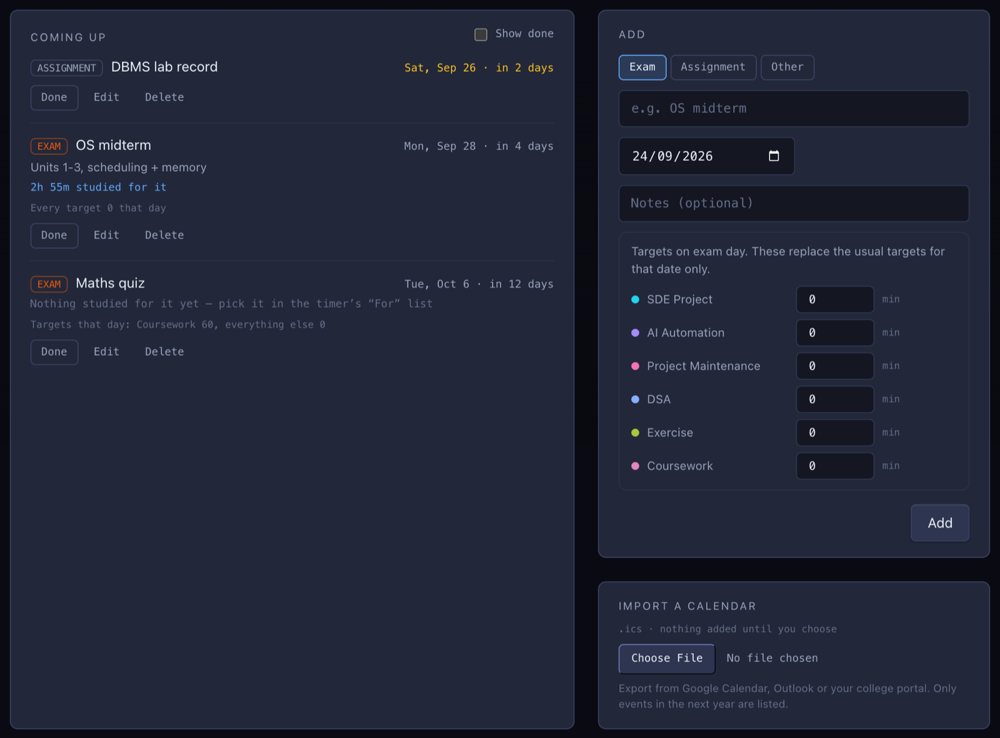
Adding an exam sets every category's target to 0 for that
day — change any of them in the form first, e.g. Coursework 60 on a study
day. They're ordinary overrides: the weekly chart marks the day
*, and an exam added after its day has passed shows up
in the honesty ledger, like any late override.
Move, rename or delete the exam and its overrides follow. If you've edited that day's target by hand since, your edit wins and is left alone.
Hours studied for each exam
Pick an exam in the timer's For list (Chapter 04) and those sessions count towards it. Each exam then shows how much you've put in so far, and the monthly letter and year in review list the total per exam.
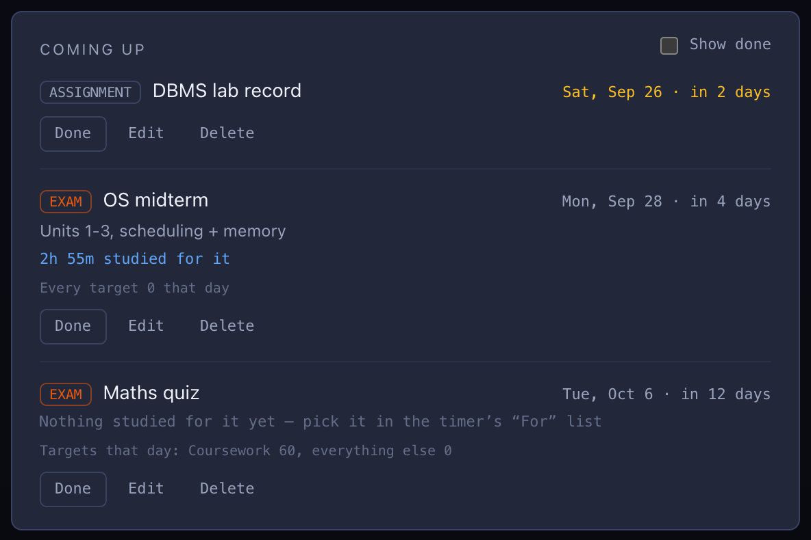
Give an exam a study target in hours (in the add or edit form) and it shows a bar and the daily pace to reach it: what's left, spread over today up to the day before, rounded up to 5 minutes.
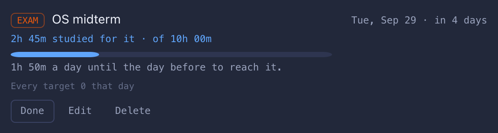
Importing a calendar
Export your timetable or exam schedule as an .ics file (Google
Calendar, Outlook and most college portals can) and choose it under
Import a calendar. You get a list of the next year's events; nothing is
added until you tick them. Titles that look like exams — mid-sem, end-sem,
quiz, viva — start ticked as exams, and an imported exam sets its day's targets
just like a typed one.
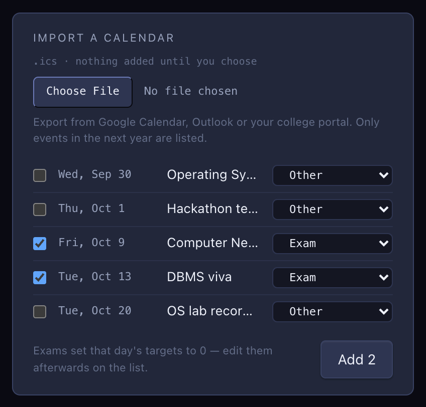
Plans, goals & your month
Minutes say how long. This chapter is about the rest: what you meant to do, what you actually produced, the small daily habits around the work, and how a whole month looked. None of it changes a score.
The daily plan
On the Agenda page. The evening before, set minutes per category and a short task list for tomorrow. On the day, each category shows what you've actually done beside what you planned, and tasks tick off. Carry over copies yesterday's unfinished tasks — copies, so yesterday still honestly shows them as not done.
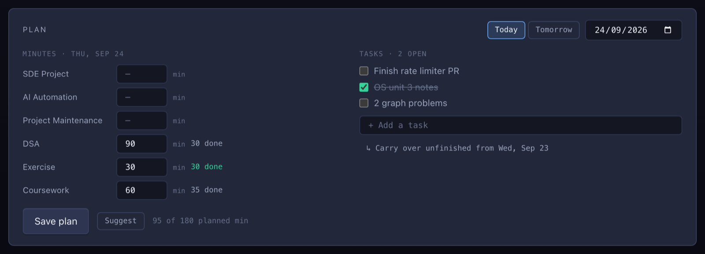
Suggest fills the minutes in for you: what's left of each category's week spread over the days left (rounded up to 5), an override's number where there is one, 0 on rest days. It also names any exam in the next three days. The suggestion only fills the form — change anything, then save.
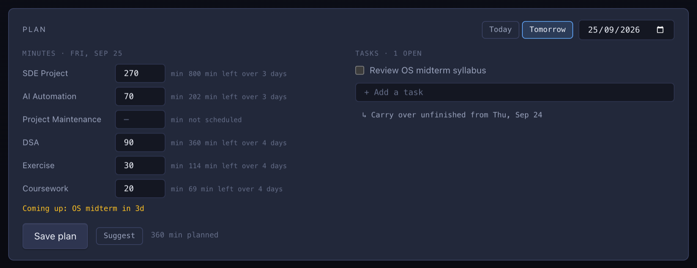
Habits — yes or no, every day
At /goals (or g). A habit is a daily yes/no —
no phone the first hour, read 10 pages — on the days you choose.
Only today stays open until it's over. Forgot to tick yesterday even though you did it? Click that day's square to fix it. A habit counts from the day you add it — never backwards — so adding one never creates a history of misses.
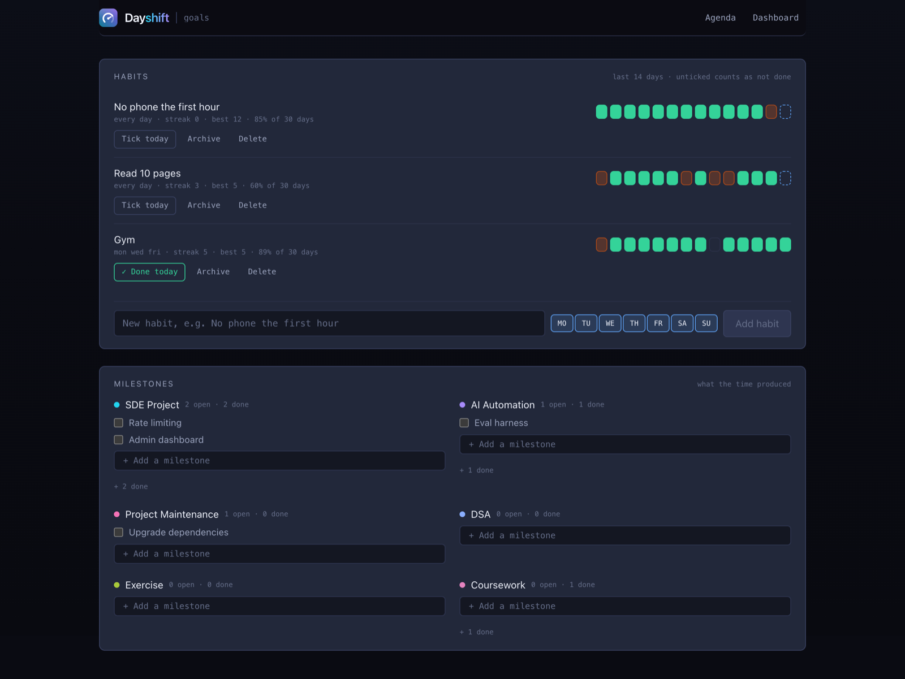
Today's habits can also be ticked straight from the dashboard's Today line:
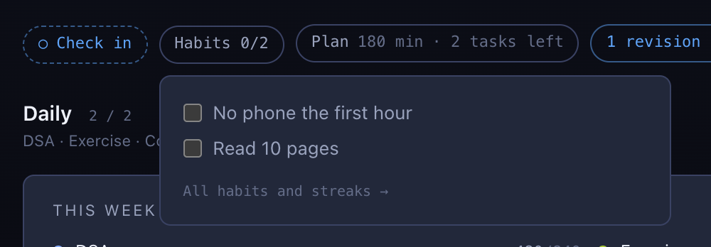
Milestones — what the time produced
Also on Goals: a checklist per category — auth done, deployed v1. Tick one and it's dated. The weekly review lists the week's finished milestones under What it produced, and so does the monthly letter.
The monthly letter
From the ⋯ menu, the Review page, or m. A month
written out: total time against the month before, the best week, each
category's share of target, milestones finished, problems solved and revised,
sleep and energy, habits and how much of your plans you kept.
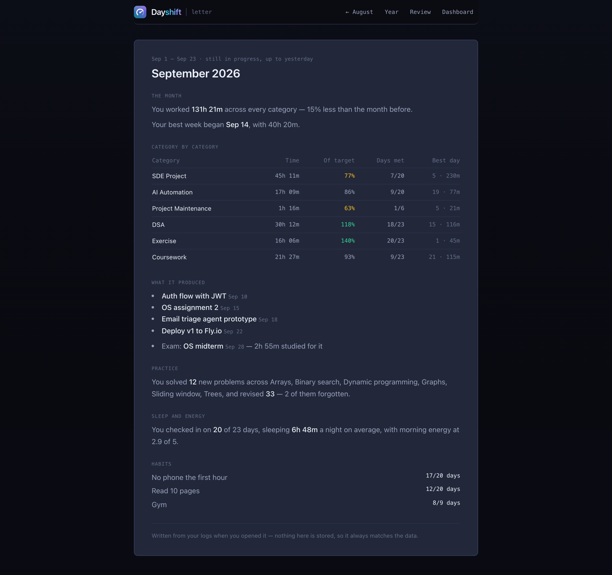
The year in review
From the ⋯ menu, the letter's Year link, or the command
palette. The same idea for a whole year, built from the twelve letters so the
two always agree: a bar per month, each category's time, share of target and
days met, problems, sleep, habits, hours per exam and every milestone.
Git vs logged
In Settings, point a category at the git repositories you work in. Insights then shows your own commits beside the minutes you logged, and flags two kinds of mismatch: a day with an hour or more logged and no commits, or commits with nothing logged.
Dayshift only ever runs git log, and only where the backend can see
the folders — so this works when the app runs locally, not on a hosted server.
Shortcuts & quick actions
The small things that make a tracker quick enough to actually keep using.
Press ? anywhere in the app to see every shortcut — or
open the ⋯ menu and choose Keyboard shortcuts.
? panel. Shortcuts are single keys, and they switch off while you're typing in a field, so they never get in the way of a number — if ? seems to do nothing, click an empty part of the page first.The command palette
⌘ / Ctrl + K from
anywhere. Type to jump to any page or start a timer — or log without touching
the mouse: +25 sde, 45 ai, +1q dsa,
30 ex. Categories match by the start of a word or by initials
(pm is Project Maintenance).
The ones worth learning first
- [ ]
- previous / next domain
- l
- jump to the Log tab
- t
- jump to the Timer tab
- r i s d
- Review, Insights, Settings, Dashboard
- q a g m
- Practice, Agenda, Goals, monthly letter
- /
- search notes and tags
- ⌘/Ctrl + Enter
- record the log form
Things that happen on their own
- Midnight. Leave the dashboard open overnight and it rolls over to the new day by itself — no stale "today".
- Coming back. Return to the browser tab and the numbers refresh.
- The backend drops. The page keeps what it last loaded and shows a Retry bar, rather than going blank.
- A timer you forgot. After three hours the timer asks whether you stepped away, and suggests Discard.
- A focus block ends. It records exactly its planned length, even if the page was closed.
- Once a week. If an export folder is set, a fresh JSON export lands in it.
- In the evening. If the reminder is installed and on, one notification about what's still open.
On a phone
Log on the phone, read on the laptop. On a phone the Today line starts with
＋ Quick entry: one column of big buttons — +10 +15 +30
+60, +1 question, the timer, today's habits and the
check-in — with an Undo for the last add.
/quick.Opening it on your phone
Dayshift runs on your Mac, so the phone opens the Mac's address. Start it with
this instead of plain dayshift:
dayshift share
It prints the address (like http://192.168.1.20:5173) and a QR code
in the terminal: point the phone's camera at it, sign in as usual, and — on an
iPhone — Share → Add to Home Screen for an icon. Plain
dayshift stays private to the Mac; sharing is something you turn on.
- Same Wi-Fi only, and only while the Mac is on and awake with Dayshift running.
- The first time, macOS may ask whether node may accept incoming connections — allow it, or the phone can't connect.
- Only the app's page is shared. The server holding your data stays private to the Mac, and nothing can be read without signing in.
- Use it on networks you trust. On college or café Wi-Fi, anyone there can reach the sign-in page.
From anywhere: Tailscale
Tailscale is a free private network between your own devices. Install it on the
Mac and the phone and sign both into the same account; the phone can then reach
the Mac from anywhere, without Dayshift ever being on the public internet. Run
dayshift share again and it lists a Tailscale address too;
dayshift share tailscale shows the QR code for that one. The Mac
still has to be on at home.
When something breaks
The short list of things that actually go wrong, and what each one means.
Par shows a dash
Expected in two cases: you're before your tracking start date, or the window holds no scheduled days for that category yet. It means "no score yet", which is honest — showing 0% would imply you failed at something that hasn't started.
"Port 8000 is already in use"
A previous run didn't shut down. Stop it and start again:
pkill -f "uvicorn app:app"
The phone can't open it
Work down the list; the first one is almost always it.
- Started with
dayshift share? Plaindayshiftonly answers the Mac.dayshift statussays shared or this Mac only. - Same Wi-Fi? A phone on mobile data, or on a different network, can't reach the Wi-Fi address.
- A college, office or café network? Those usually stop devices reaching each other (client isolation) — the Mac is fine, but nothing gets through. Use the Tailscale address instead:
dayshift share tailscale. - Tailscale on the phone switched on? The toggle at the top of its app; iOS shows a VPN badge while it's active. Tailscale started after
dayshift share? Run it again to see the new address. - A macOS prompt about node accepting incoming connections? Allow it (System Settings → Network → Firewall → Options if you dismissed it).
The backend won't start
Read backend.log in the project folder. Configuration problems fail
immediately with a message naming the setting, rather than surfacing later as a
mysterious error.
You've forgotten your passcode
Delete auth.json. The app returns to the first-run setup screen and
you choose new credentials. Your tracked data is untouched — it
lives in dayshift.db, which is a different file.
You want to start over completely
make reset-db
Deletes the database; it's recreated and reseeded on the next start. There's a
copy in backups/ if you change your mind.
Everything at once
make on its own lists every command. make check runs
the full test suite plus linting — worth doing after you change anything.
Nothing in Dayshift can stop you lying to it. Every safeguard here is about making the truth visible, never about enforcement — there's no edit lock, no approval step, no time window after which a day freezes.
That's deliberate. A tracker that fights you is a tracker you stop opening, and the logs are only worth anything if they're true.